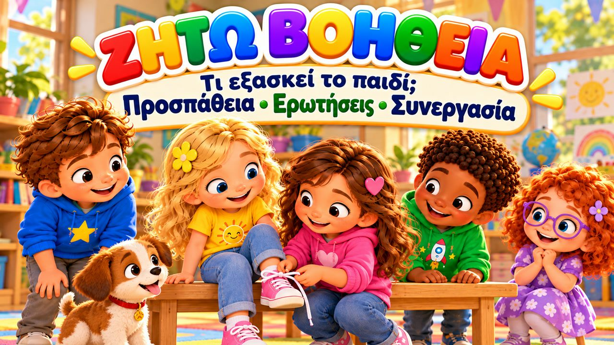
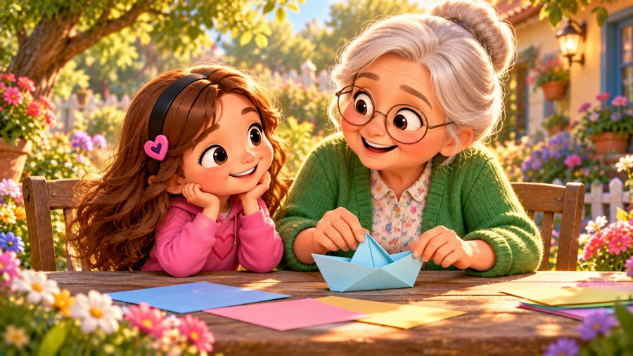
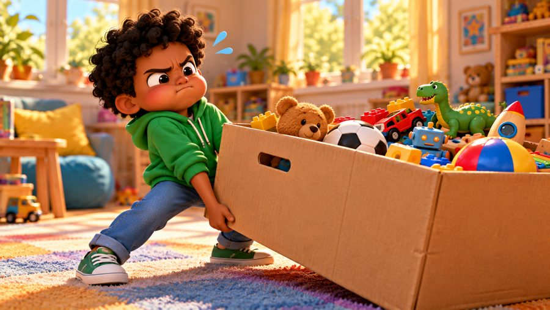
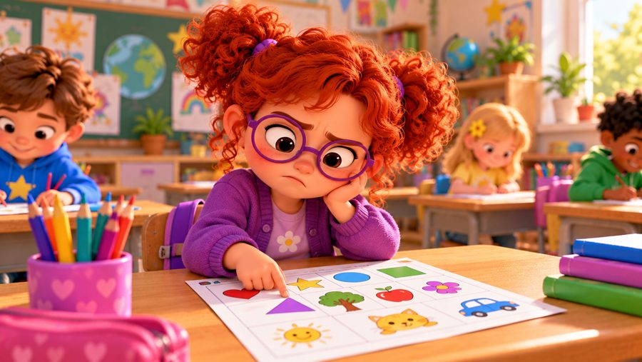
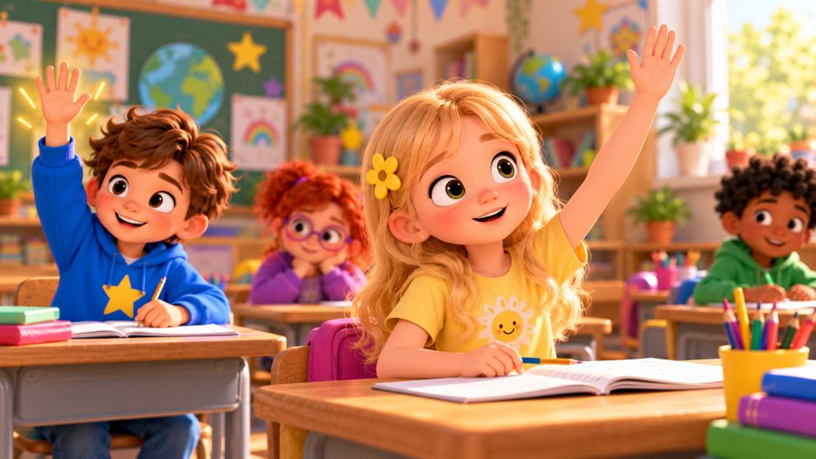

Μπορώ να ζητήσω βοήθεια!
Ένα τραγούδι για το πώς ζητάμε βοήθεια! 🙋 Τραγουδήστε με τον Μαξ, τη Μία, τον Τζέι, τη Λίλη, τη Ρόζα και τον σκυλάκο Μπάντι, που μαθαίνουν να προσπαθούν πρώτα, να παίρνουν ανάσα, να το λένε με λόγια — και να ζητούν βοήθεια όταν δυσκολεύονται.
Στο «Μπορώ να Ζητήσω Βοήθεια!» της Λίλης της λύνονται συνέχεια τα κορδόνια, ο Τζέι δεν μπορεί να μετακινήσει μόνος ένα μεγάλο κουτί κι η Ρόζα δεν καταλαβαίνει μια άσκηση — και ζητούν βοήθεια από έναν φίλο, έναν μεγάλο ή τη δασκάλα, και μαθαίνουν κάτι καινούριο. Με στίχους-καραόκε στην οθόνη, για παιδιά 3–8 ετών, στο σπίτι, στο νηπιαγωγείο και στα Εργαστήρια Δεξιοτήτων.

▶💡 Γιατί είναι σημαντικό: Ζητάω βοήθεια
Το να ζητάμε βοήθεια δεν σημαίνει ότι τα παρατάμε — είναι ένας έξυπνος και θαρραλέος τρόπος να μαθαίνουμε. Τα παιδιά που μπορούν να ζητήσουν βοήθεια κολλάνε λιγότερο, απογοητεύονται λιγότερο και μαθαίνουν πιο γρήγορα. Δείξτε ότι είναι φυσιολογικό ζητώντας κι εσείς βοήθεια πού και πού, και ενθαρρύνετε το «πρώτα προσπαθώ, μετά ρωτάω» με ένα ζεστό «Φυσικά και θα σε βοηθήσω».
👨👩👧 Τι μαθαίνει το παιδί
- Να προσπαθεί πρώτα και να ρωτά όταν κολλάει
- Ήρεμα, ευγενικά λόγια: «Μπορείς να με βοηθήσεις;»
- Ότι δεν χρειάζεται να τα ξέρει όλα
- Να ζητά βοήθεια από φίλο, δασκάλα ή έναν μεγάλο που εμπιστεύεται
- Ότι η βοήθεια σημαίνει μάθηση, όχι ότι τα παρατάω
💬 Κουβέντα μετά το τραγούδι
- Πότε σε βοήθησε κάποιος να μάθεις κάτι καινούριο;
- Ποιον μπορείς να ρωτήσεις όταν κάτι σε δυσκολεύει;
🏅 Κουίζ & Πτυχίο
Είδατε το τραγούδι μαζί; Τώρα διαβάστε στο παιδί κάθε ερώτηση — το παιδί δείχνει τη σωστή εικόνα. Αν απαντήσει και στις 6 ερωτήσεις, κερδίζει ένα πτυχίο για εκτύπωση!
🔒 Το όνομα χρησιμοποιείται μόνο για να φτιαχτεί το πτυχίο στη συσκευή σας. Δεν αποθηκεύουμε και δεν στέλνουμε τίποτα.
Τα κατάφερες! 🎉
Και οι 6 απαντήσεις είναι σωστές! Γράψτε το όνομα του παιδιού για να φτιαχτεί το πτυχίο.
🖨️ Δωρεάν εκτυπώσιμα
Δωρεάν για χρήση στο σπίτι και στην τάξη. Εκτυπώστε σε χαρτί Α4.
🖼️ Σκηνές από το τραγούδι





🎵 Κι άλλα τραγούδια


🎤 Στίχοι – Μπορώ να ζητήσω βοήθεια!
Χμμ...
Δοκίμασα μία φορά.
Δοκίμασα ξανά.
Μα αυτό με δυσκολεύει!
Τι μπορώ να κάνω;
Παίρνω ανάσα...
το λέω με λόγια...
και ζητάω βοήθεια!
Η Λίλι έδενε τα κορδόνια,
μα συνέχεια λύνονταν ξανά.
Έκανε έναν κόμπο,
δοκίμασε πάλι...
μα δεν της έβγαινε σωστά.
Άρχισε λίγο να θυμώνει:
«Μα γιατί δεν μπορώ;»
Σταμάτησε,
πήρε μια ανάσα
και κοίταξε τον Μαξ.
«Μπορείς να μου δείξεις
πώς να το κάνω;»
«Φυσικά!» της είπε εκείνος.
«Κοίτα καλά!»
Μια θηλιά...
γύρω γύρω...
και περνάει από εδώ!
Η Λίλι δοκίμασε ξανά...
«Το έκανα κι εγώ!»
Πρώτα μπορώ
να προσπαθήσω.
Δεν χρειάζεται
να τα ξέρω όλα.
Κι αν κάπου
δυσκολευτώ...
μπορώ βοήθεια
να ζητήσω!
Μπορώ να ζητήσω βοήθεια!
Μπορώ απλά να πω:
«Μπορείς να με βοηθήσεις;»
«Μπορείς να μου το δείξεις;»
«Δεν το κατάλαβα αυτό!»
Προσπαθώ!
Δεν βιάζομαι!
Κι αν δυσκολευτώ,
δεν πειράζει!
Ρωτάω έναν φίλο!
Ρωτάω έναν μεγάλο!
Δεν χρειάζεται
να τα κάνω όλα μόνος!
Μπορώ!
Μπορώ!
Μπορώ να ζητήσω βοήθεια!
Ο Τζέι είχε ένα μεγάλο κουτί
και ήθελε να το μετακινήσει.
Το τράβηξε,
το έσπρωξε...
μα δεν μπορούσε
εύκολα να το κουνήσει.
Θα μπορούσε
να προσπαθεί μόνος...
μα είχε κι άλλη επιλογή.
«Μία, μπορείς
να με βοηθήσεις;»
«Φυσικά!
Ας το σηκώσουμε μαζί!»
Ο ένας από τη μία,
ο άλλος από την άλλη...
και περπάτησαν σιγά.
Αυτό που μόνος
ήταν δύσκολο...
μαζί έγινε πιο εύκολο τελικά!
Πρώτα μπορώ
να προσπαθήσω.
Δεν χρειάζεται
να τα ξέρω όλα.
Κι αν κάπου
δυσκολευτώ...
μπορώ βοήθεια
να ζητήσω!
(ρεφρέν)
(ρεφρέν)
Προσπαθώ!
Δεν βιάζομαι!
Κι αν δυσκολευτώ,
δεν πειράζει!
Ρωτάω έναν φίλο!
Ρωτάω έναν μεγάλο!
Δεν χρειάζεται
να τα κάνω όλα μόνος!
Μπορώ!
Μπορώ!
Μπορώ να ζητήσω βοήθεια!
Η Ρόζι κοίταζε μια άσκηση,
μα κάτι δεν καταλάβαινε καλά.
Την κοίταξε άλλη μια φορά,
σκέφτηκε ξανά...
μα πάλι δεν έβγαζε άκρη.
Για μια στιγμή ντράπηκε:
«Κι αν οι άλλοι
το έχουν καταλάβει;»
Μα μετά σήκωσε το χέρι:
«Μπορείτε να μου το εξηγήσετε
άλλη μια φορά;»
Η δασκάλα χαμογέλασε
και της το έδειξε ξανά.
Η Ρόζι άκουσε προσεκτικά...
«Ααα!
Τώρα κατάλαβα!»
Μια μικρή ερώτηση
τη βοήθησε να μάθει!
Κάτι σε δυσκολεύει;
ΠΡΟΣΠΑΘΩ!
Ακόμα δυσκολεύεσαι;
ΖΗΤΑΩ ΒΟΗΘΕΙΑ!
Δεν κατάλαβες;
ΡΩΤΑΩ!
Είναι πολύ βαρύ;
ΖΗΤΑΩ ΕΝΑ ΧΕΡΙ!
Ντρέπεσαι λίγο;
ΠΑΙΡΝΩ ΑΝΑΣΑ!
Τι μπορείς να πεις;
«ΜΠΟΡΕΙΣ ΝΑ ΜΕ ΒΟΗΘΗΣΕΙΣ;»
Αν ζητήσω βοήθεια
σημαίνει πως δεν μπορώ;
ΟΧΙ!
Τι σημαίνει;
ΜΑΘΑΙΝΩ!
Όταν ζητάω βοήθεια
δεν σημαίνει
πως τα παρατάω.
Δεν σημαίνει
πως κάποιος άλλος
θα κάνει τα πάντα για μένα.
Μπορώ να προσπαθήσω.
Μπορώ να ρωτήσω.
Μπορώ να παρατηρήσω.
Μπορώ να μάθω.
Και μετά...
να δοκιμάσω ξανά!
(ρεφρέν)
(ρεφρέν)
Προσπαθώ!
Ρωτάω!
Και κάθε μέρα
κάτι νέο μαθαίνω!
Έναν φίλο!
Μια δασκάλα!
Έναν μεγάλο που εμπιστεύομαι!
Δεν χρειάζεται
να τα ξέρω όλα...
έτσι μαθαίνουμε
και μεγαλώνουμε!
ΠΡΟΣΠΑΘΩ!
ΡΩΤΑΩ!
ΜΑΘΑΙΝΩ!
ΞΑΝΑΠΡΟΣΠΑΘΩ!
Μπορώ!
Μπορώ!
ΜΠΟΡΩ ΝΑ ΖΗΤΗΣΩ ΒΟΗΘΕΙΑ!
Πρώτα προσπαθώ...
Κι αν δυσκολευτώ...
παίρνω ανάσα
και το λέω καθαρά:
«Μπορείς να με βοηθήσεις;»
Ζητάω βοήθεια...
και μαθαίνω!